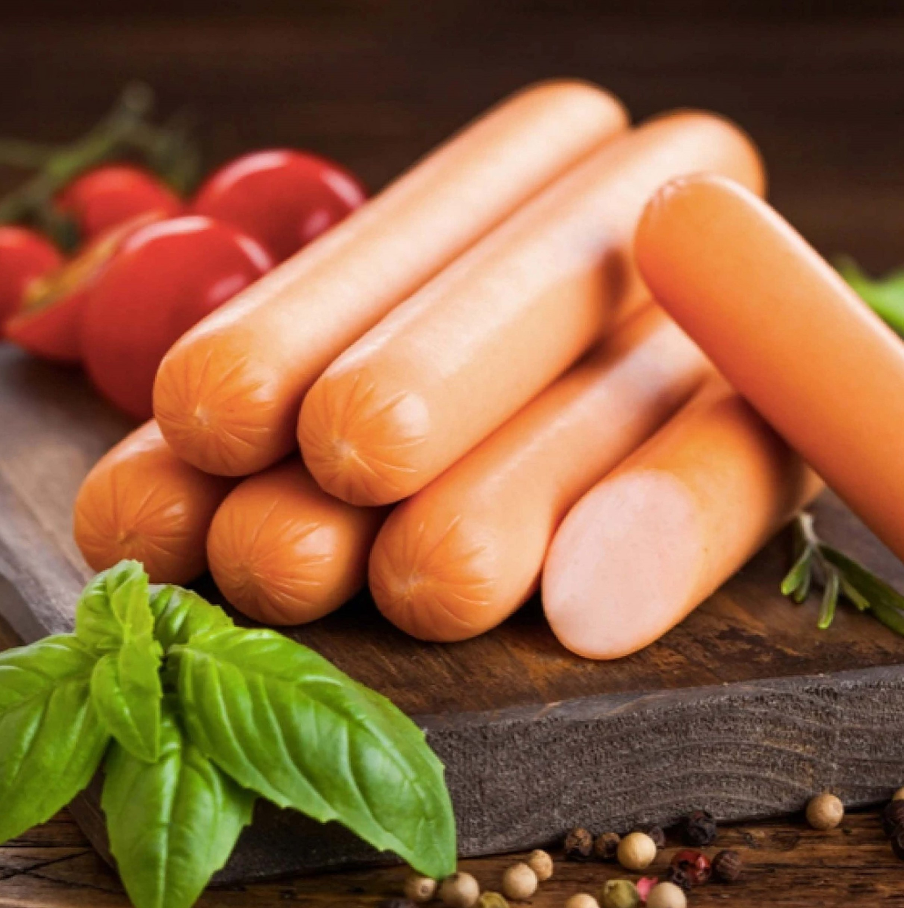
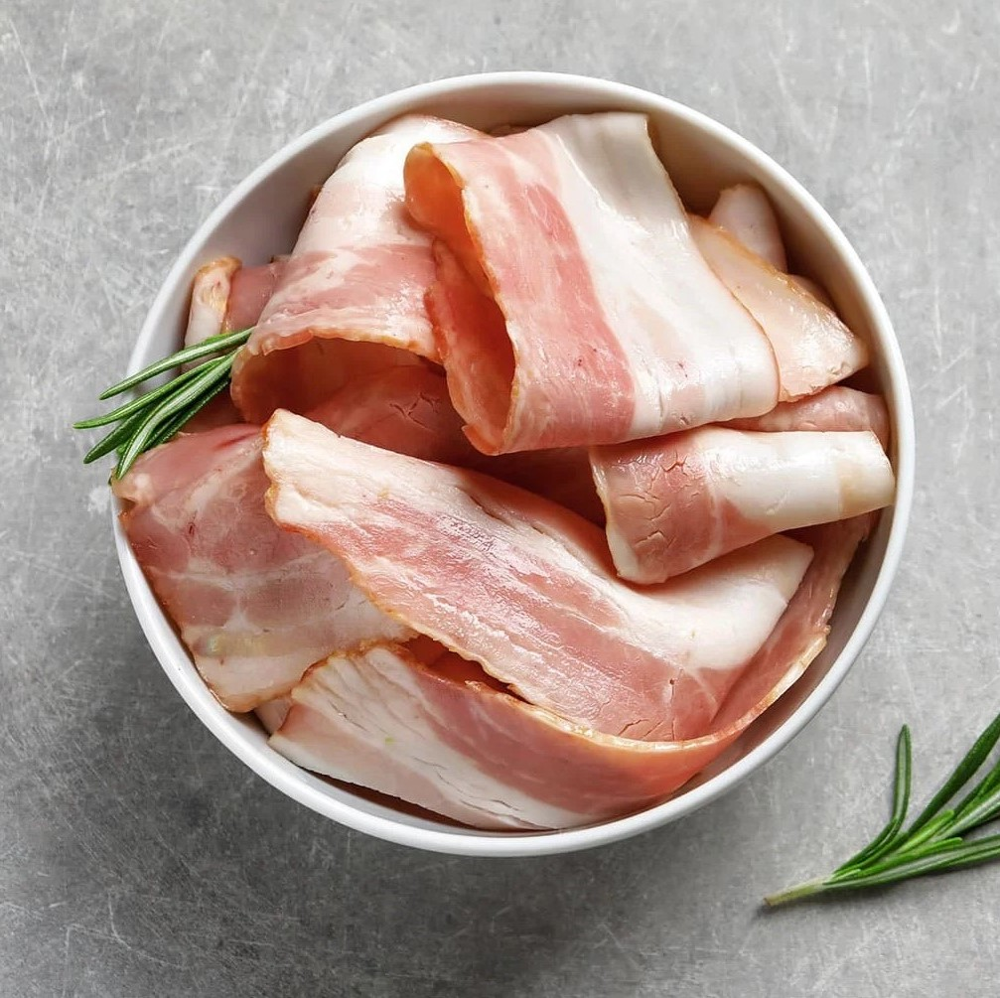
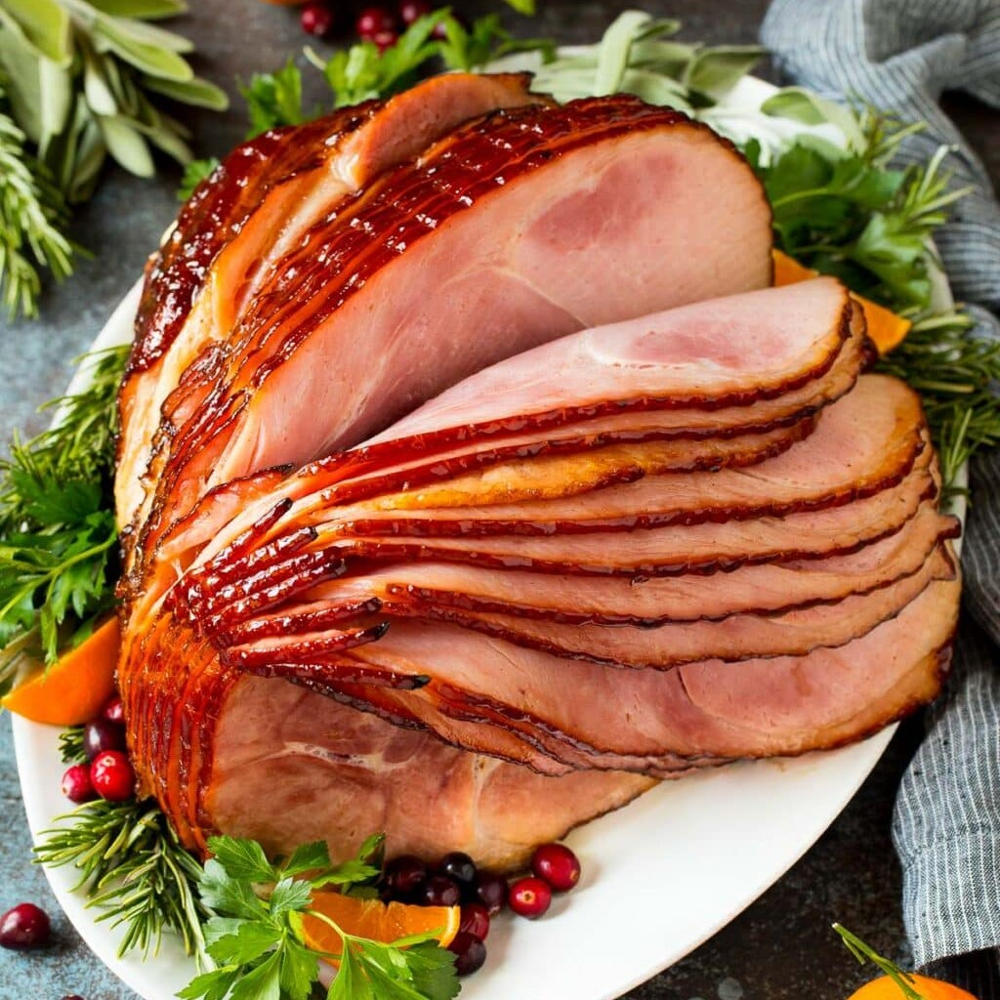
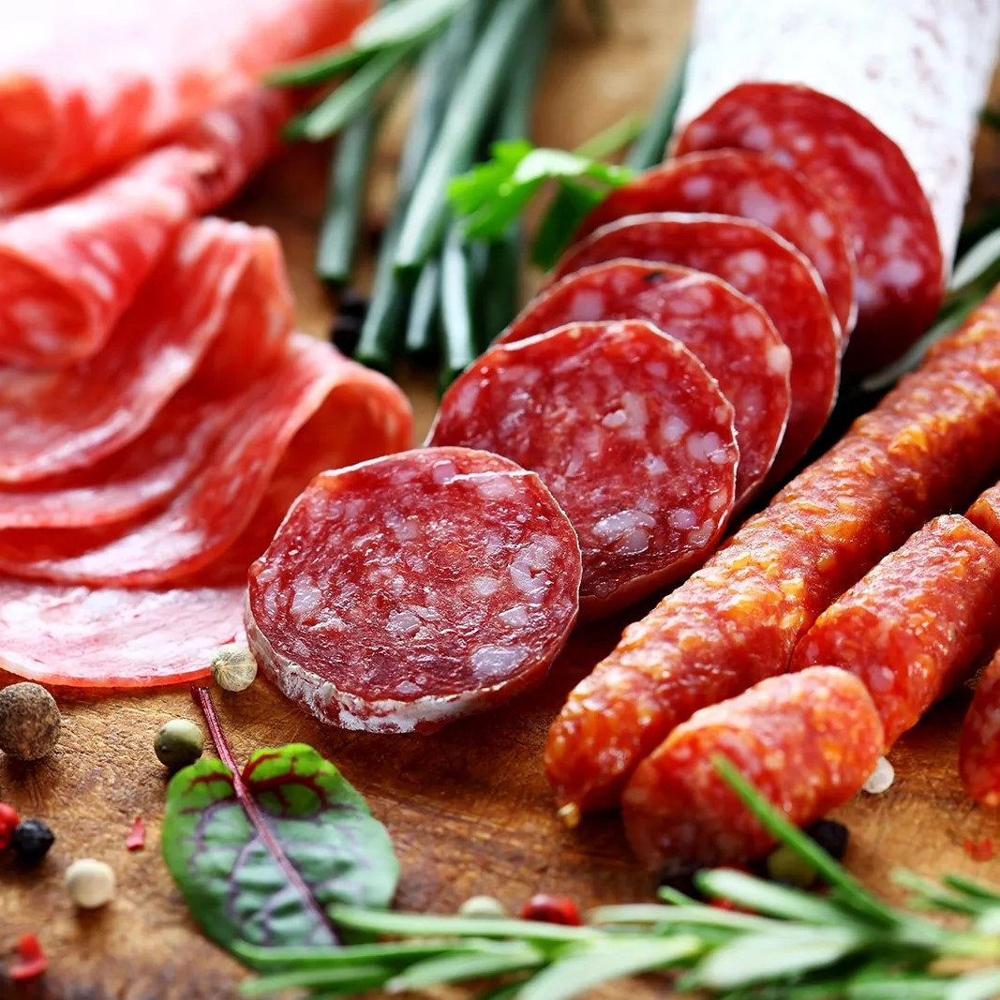
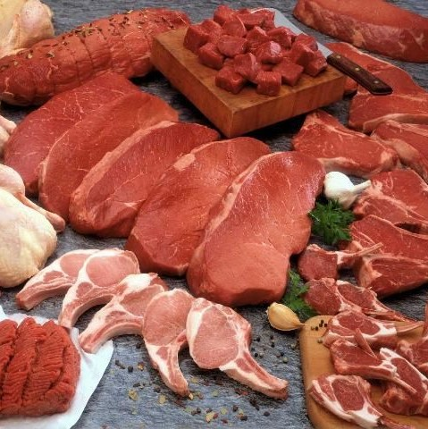
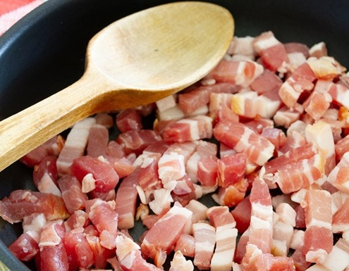
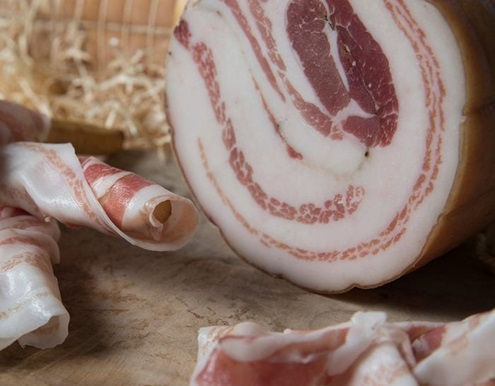
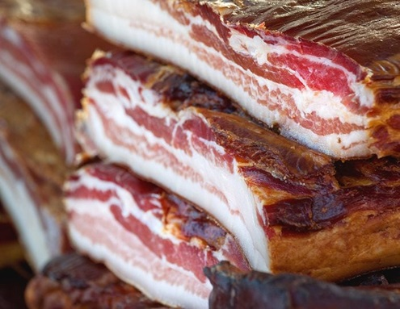
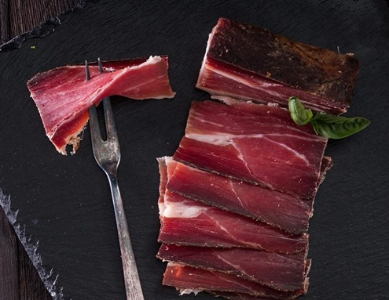
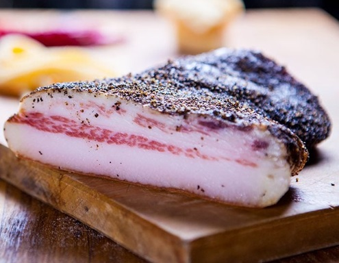

This type is also known as “English bacon.” It’s another type of back bacon similar to Canadian bacon, but with a layer of fat around the outer edge of the slices. Rashers are a staple of the traditional Irish breakfast.
Products

Sausage
Flavorful sausages made from the finest ingredients.

Bacon
Crispy and savory bacon perfect for any meal.

Ham
Premium ham that melts in your mouth.

Salami
A variety of salamies for pizza and more.

Processed Meat
Different taste experience of meats in various products
All kinds of Bacons:
Lardons
S
Lardons are called for in recipes to add bacony flavor to salads, sauces and roasts. They’re cuts of pork belly or loin that are cured in salt and seasonings, then cut into cubes or matchstick-sized pieces. Looking for more recipes? Learn how to make crispy pork belly.
Pancetta
S
Pancetta is an Italian bacon that comes in thin slices that show a spiral of meat and fat. It’s made from pork belly, and cured with spices like clove, rosemary or juniper. Traditionally, it’s not smoked. Pancetta adds delicate bacon flavor to main dishes, sides and appetizers like this.
Slab
Bacon
This is a large slab of cured, smoked pork with the rind still attached—basically uncut bacon. Find it at butcher shops where the slabs can be purchased whole or sliced to order in thin or thick strips. You can buy the perfect amount for your next bacon recipe.
Speck
Bacon
This bacon is made from the hind leg cut of pork, the same cut used for ham. Speck is characterized by this cut and by the spice blend used for curing, which traditionally includes piney, crushed juniper berries.
Guanciale
Bacon
Pronounced gwan-CHA-lay, this Italian bacon is made from pork jowl. It has a long curing and drying time, and traditionally is not smoked. The resulting bacon is fatty and soft with a stronger flavor than pancetta. Guanciale is often used in Italian sauces like this carbonara.